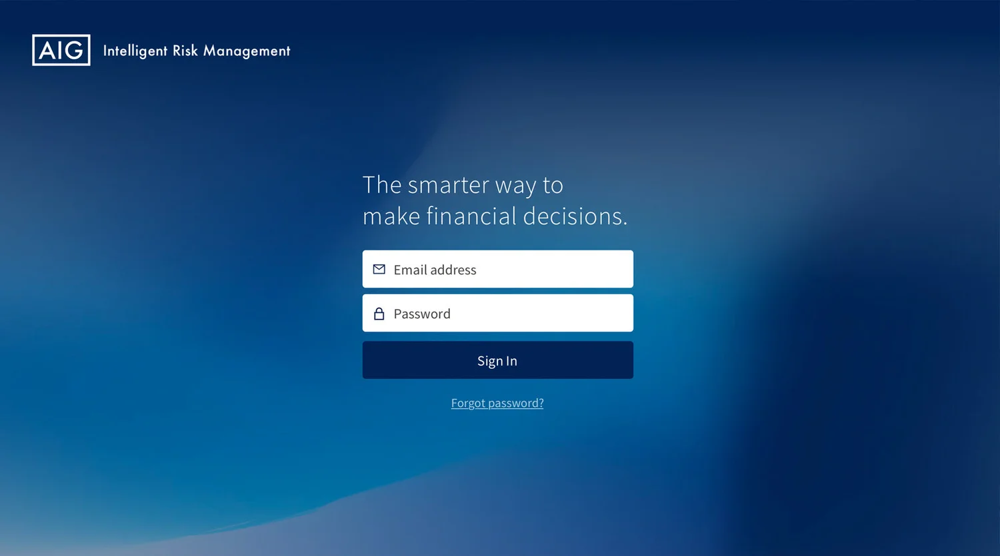
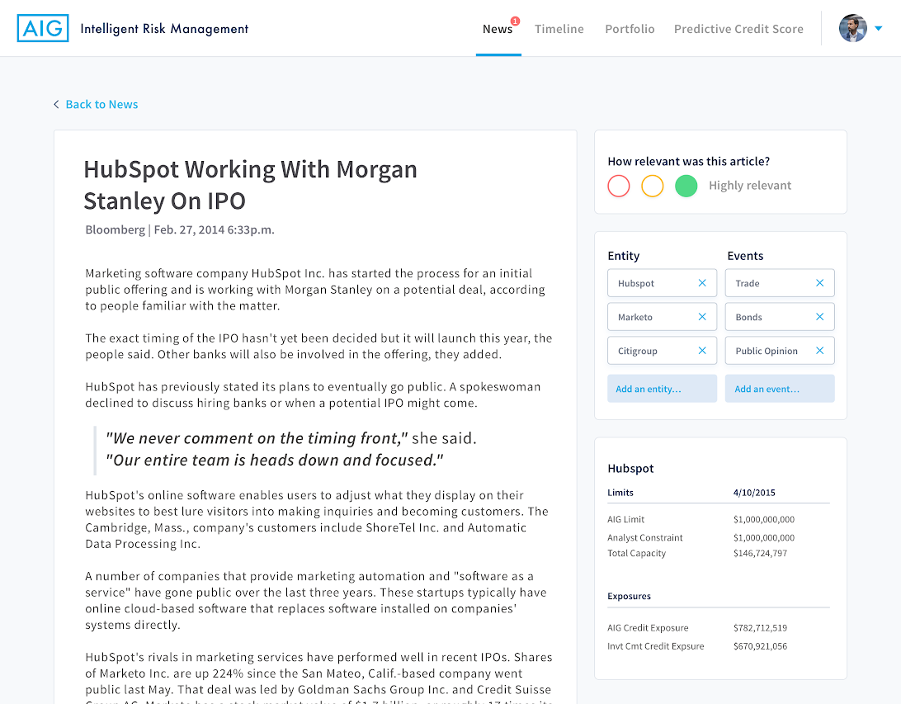
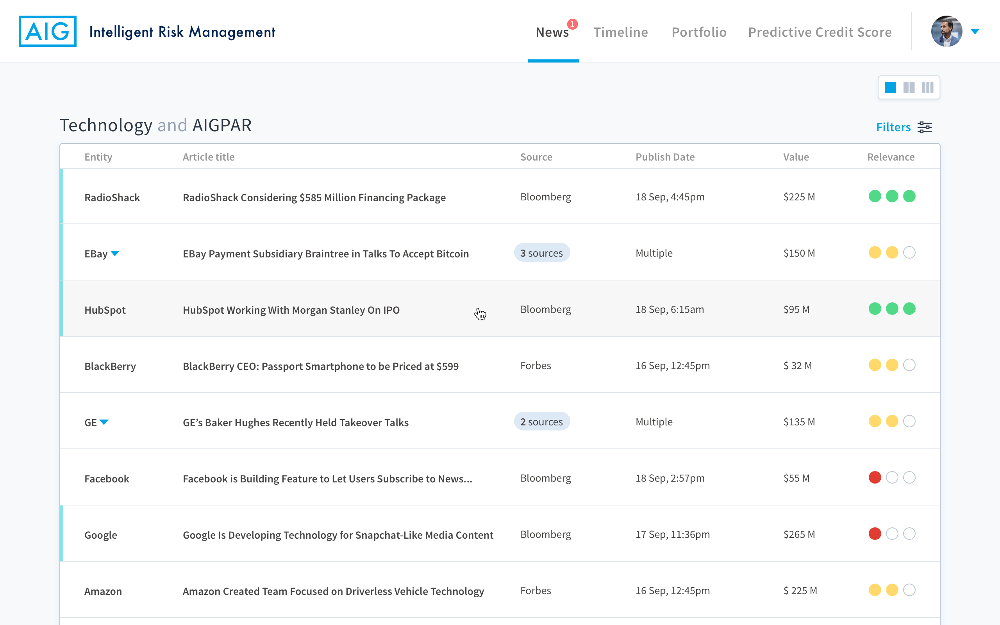
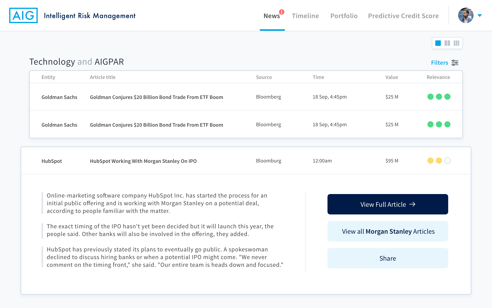
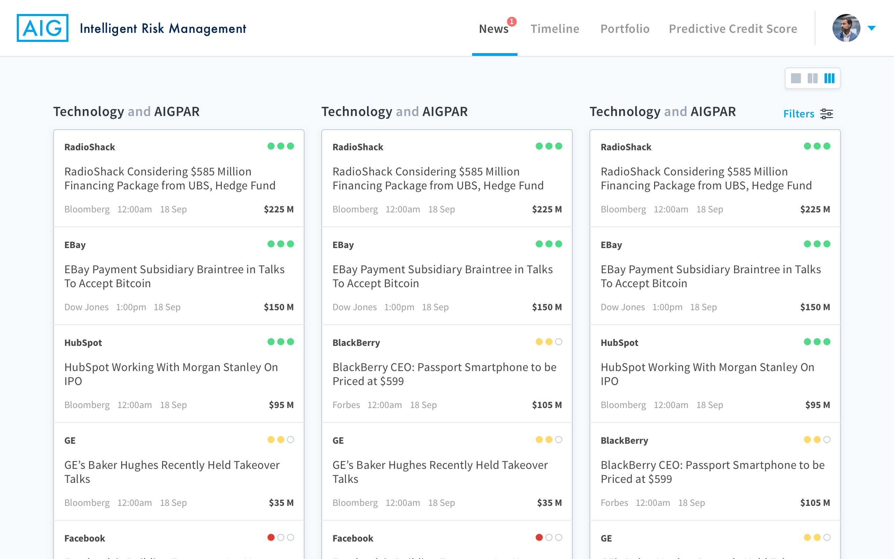
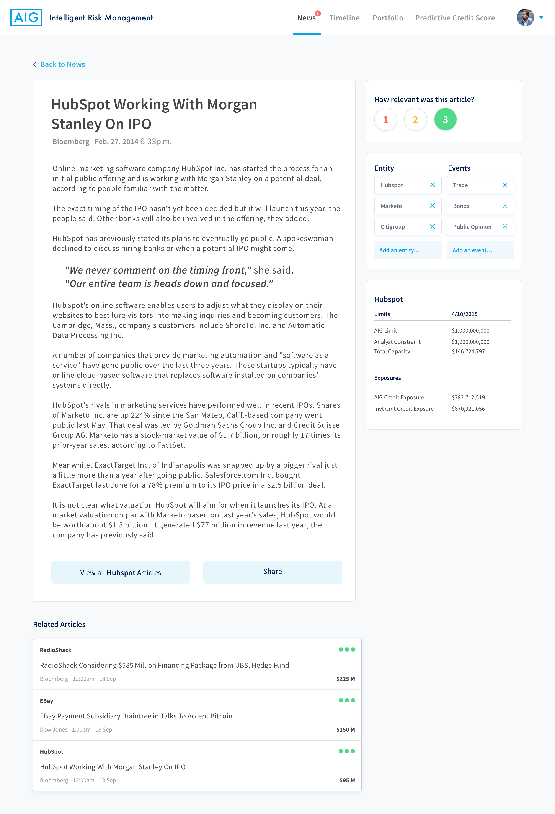

Intelligent Risk Management
Background
Analysts at AIG scan hundreds of news articles daily to predict changes in the value of their investments.
To support these analysts, the Data Science team at AIG had a vision to build an AI-driven solution that could digest large amounts of new, unstructured data through cutting-edge machine learning to provide analysts at AIG with early and actionable insights.

Challenge
When Beyond was first consulted for the project, AIG's Data Science team had already created their machine learning algorithm and a basic user interface, called Intelligent Risk Management (IRM). With IRM, AIG was able to aggregate important investment news sources into a personalized feed based on an analysts portfolio.
However, the Data Science team at AIG found that analysts were uninterested in adopting a new tool—they believed that new products and processes would only slow them down in their daily tasks. To engage their analysts, AIG needed IRM to introduce as little friction as possible in their analysts day-to-day lives.
Our approach
At the start of this project, our team rapidly immersed themselves in existing research and technology currently developed for IRM by AIG.
From there, we conducted user interviews with analysts at AIG to identify core user needs. Additionally, we completed a UX audit of the existing platform (alongside competing data platforms) to identify potential quick wins. Once our initial recommendations were in place, we developed a roadmap to ensure priority alignment between our team and the client team.

Outcomes
We partnered with AIG to run a dual-track agile workstream, testing concepts while designing and developing a working prototype.
Additionally, we were able to partner with the Data Science team at AIG regularly to ensure our designs allowed user behavior to feed directly into the machine learning algorithm, increasing the accuracy of IRM over time.
In the end, we were able to develop a fully engineered, clickable prototype integrated with AIG’s IRM API using their coding standards.
Before the engagement ended, our design team also developed a system of components and high-fidelity designs for each future screen on IRM.
Project samples & additional details

User feedback often included the question, “Can we add another column here?”


